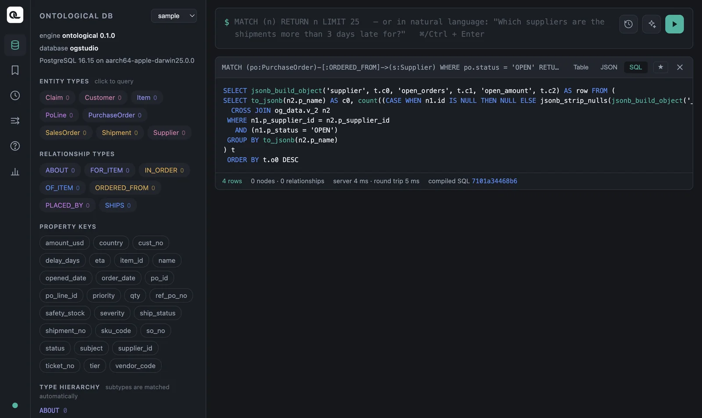
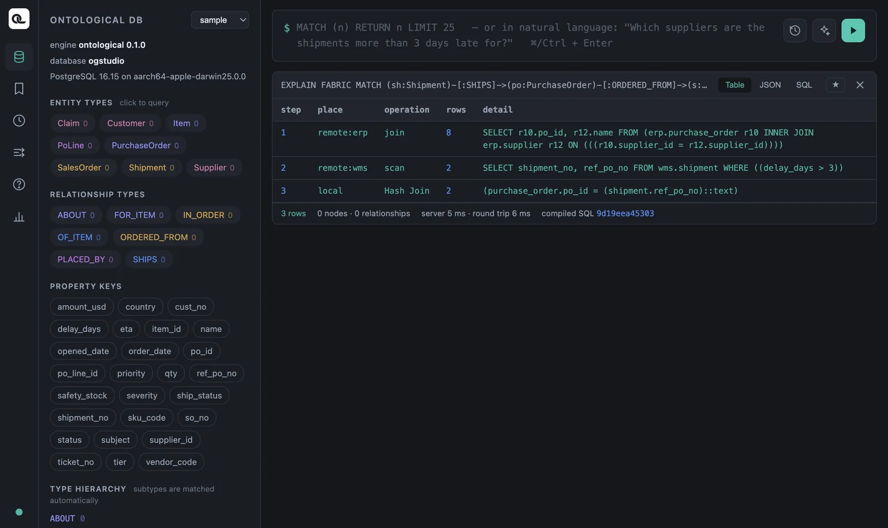
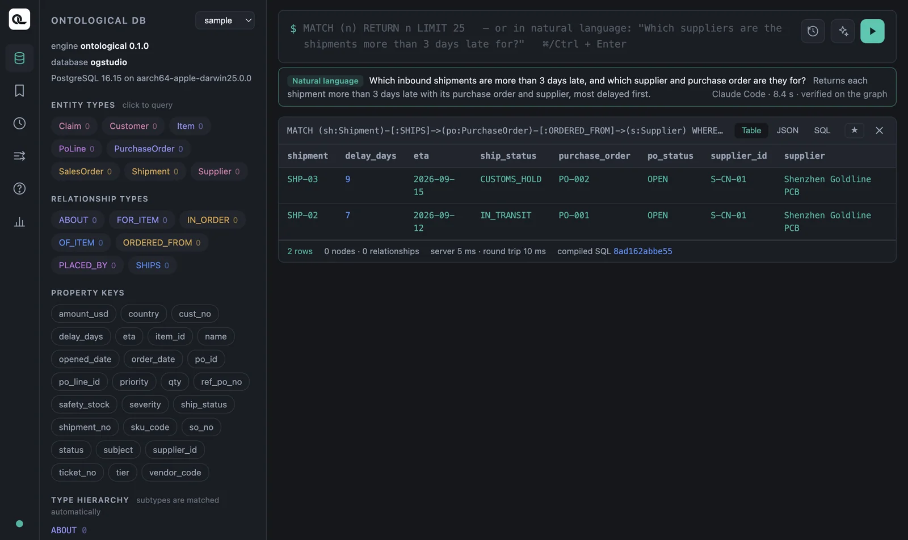

Look at how a query actually runs (its SQL translation and the fabric execution plan), generate Cypher from plain language, and create your own graph to write nodes and relationships yourself.
See the translated SQL#
Ontological DB translates Cypher into PostgreSQL SQL and runs that. You can see the translation in the SQL tab of the result card.
MATCH (po:PurchaseOrder)-[:ORDERED_FROM]->(s:Supplier)
WHERE po.status = 'OPEN'
RETURN s.name AS supplier, count(po) AS open_orders, sum(po.amount_usd) AS open_amount
ORDER BY open_amount DESC

A value such as compiled SQL 668a5ee48536 under the result card identifies the translated SQL. For the same Cypher, this fingerprint stays the same even if you change the point in time (Chapter 10) — the query is the same, and only the conditions change.
The fabric execution plan — EXPLAIN FABRIC#
When a query reaches sources in several databases, performance depends on which system runs which part of the work. Put EXPLAIN FABRIC in front of a query to see the plan step by step.
EXPLAIN FABRIC
MATCH (sh:Shipment)-[:SHIPS]->(po:PurchaseOrder)-[:ORDERED_FROM]->(s:Supplier)
WHERE sh.delay_days > 3
RETURN sh.shipment_no, s.name
| step | place | operation | rows | detail |
|---|---|---|---|---|
| 1 | remote:erp | join | 8 | SELECT r10.po_id, r12.name FROM (erp.purchase_order r10 INNER JOIN erp.supplier r12 ON …) |
| 2 | remote:wms | scan | 2 | SELECT shipment_no, ref_po_no FROM wms.shipment WHERE ((delay_days > 3)) |
| 3 | local | Hash Join | 2 | (purchase_order.po_id = (shipment.ref_po_no)::text) |

How to read it:
- The join inside the ERP ran in the ERP (purchase order ⋈ supplier). Work within one database is left to that source.
- The WMS got the query with its condition (
delay_days > 3). Only 2 rows came back, not all 8. - Ontological DB did only the last join, the one that links the two different databases.
The more source data you have, the bigger this difference gets. If a condition cannot be pushed down to a source (for example, a condition that compares values from two databases), it shows up as local in the plan. Such a query can pull many rows from the source, so try adjusting the condition.
Asking in plain language — natural language → Cypher#
Type a plain-English sentence instead of Cypher in the input box and run it. The agent reads this graph's schema and writes the Cypher for you. (If the first word is not a Cypher keyword, the input is treated as natural language. You can also use the ✨ button or ⇧⌘Enter.)
Which inbound shipments are more than 3 days late, and which supplier and purchase order are they for?

The Cypher the agent writes is shown on screen as is, and the agent test-runs it on the graph first. If that fails, it fixes the query once, using the engine's error message. Write statements (CREATE, SET and so on) are not run; they are only placed in the input box. In our test, Claude Code wrote something like the following in about eight seconds.
MATCH (sh:Shipment)-[:SHIPS]->(po:PurchaseOrder)-[:ORDERED_FROM]->(s:Supplier)
WHERE sh.delay_days > 3
RETURN s.name AS supplier, po.po_id AS po_id, sh.shipment_no AS shipment_no,
sh.delay_days AS delay_days, sh.ship_status AS ship_status
ORDER BY sh.delay_days DESC LIMIT 100
Make use of natural-language queries
Practice reading the generated Cypher and rewriting it. Seeing which relationships the agent picked also helps you understand the schema. This feature works only in the portal inside the app (it needs a coding agent).
Writing data — make your own graph#
Virtual nodes are read-only, but nodes stored in Ontological DB can be created and changed directly with Cypher. Make a practice graph so you don't touch the sample. This statement runs no matter which graph is selected.
CREATE GRAPH tut
Now select tut in the graph selector (if it isn't in the list, refresh the portal) and create nodes.
CREATE (:Employee {emp_no: 'E1', name: 'Haneul Kim', dept: 'Purchasing', salary: 4200})
CREATE (:Employee {emp_no: 'E2', name: 'Bada Park', dept: 'Logistics', salary: 3900})
To create a relationship, first find the nodes on both ends with MATCH, then CREATE it. Relationships can have properties too.
MATCH (a:Employee {emp_no: 'E1'}), (b:Employee {emp_no: 'E2'})
CREATE (a)-[:MENTORS {since: '2025-03'}]->(b)
MATCH (a:Employee)-[m:MENTORS]->(b:Employee)
RETURN a.name, m.since, b.name
Result: Haneul Kim · 2025-03 · Bada Park.
Updating and deleting#
| What you want | Statement |
|---|---|
| Change a value | MATCH (e:Employee {emp_no:'E1'}) SET e.salary = 4500 RETURN e.salary |
| Create if missing | MERGE (d:Dept {name:'Purchasing'}) RETURN d.name |
| Create a relationship if missing | MATCH (e:Employee), (d:Dept {name:'Purchasing'}) WHERE e.dept = d.name MERGE (e)-[:WORKS_IN]->(d) |
| Delete a node and its relationships | MATCH (e:Employee {emp_no:'E2'}) DETACH DELETE e |
MERGE uses the same pattern if it already exists, and creates it if not. Run it twice and you still get only one Dept node. DETACH DELETE also deletes the relationships attached to the node (if relationships remain, DELETE alone cannot delete it).
Leave the ontology graph to Studio
The ontology graph is managed by Studio. It holds class definitions (nodes such as _OntologyClass) and action definitions, so don't edit it directly in the portal; work with it through the Build Ontology screen and the agent. Practice writing data in a separate graph like this one.
Saving and history#
- The ★ on a result card saves the query. Open it again from the bookmark icon in the left rail.
- Press ↑↓ in the input box to bring back previous queries. The clock icon list shows the write operations recently run on this graph (the audit log).
Cypher in Ontological DB — differences to know#
If you already know Neo4j's Cypher, just remember these differences.
| Topic | Ontological DB 0.1 |
|---|---|
| Labels | As a rule, write a label on every node in a pattern. Don't use label conditions of the form WHERE n:Label. |
| Subqueries | No EXISTS { … } or CALL { … } yet → OPTIONAL MATCH … IS NULL |
| Variable-length paths | -[:R*1..3]-> works only on stored relationships, not yet on virtual relationships. |
| Dates | No date() function → compare date columns directly with 'YYYY-MM-DD' strings |
| Functions | Only the list in Chapter 7. If you use a function that isn't there, the error tells you the supported list. |
| Virtual nodes | Read-only — change values through the source system (or an action) |
| Extras | SHOW … fabric statements, EXPLAIN FABRIC, time travel (Chapter 10), matching a parent label to find subtypes too |
Check yourself
- Use
EXPLAIN FABRICto look at the plan of the “claim → sales order → customer” query (Chapter 8). How many sources does this query reach? - In the
tutgraph, createDept {name:'Logistics'}twice withMERGE, and check how many there are withMATCH (d:Dept) RETURN d.name, count(*). - Ask in plain language, “Which customer filed the soldering defect claim?”, and check that the agent's Cypher gives the same result as the answer in Chapter 8.
Show answers
- All three nodes are in the CRM, so everything, including the joins, is done in one source (
remote:crm). This shows that work within one database is left to that source. MERGEdoesn't create a new node if one already exists, so the count forLogisticsis 1 (andPurchasing, created earlier, is also 1).- You should get Tokyo Devices (SO-05, T-3 “PCB soldering defect”). The agent's query may differ a little each time, but the result should be the same.